Bienala de la Istanbul
Bienala de la Istanbul (în turcă: Uluslararası İstanbul Bienali) este cea mai importantă expoziție de artă contemporană din sud estul Europei fiind tot odată unul din evenimentele de referință la nivel internațional.
Bienala a fost organizată de Fundația pentru Cultură și Arte din Istanbul (IKSV) încă de la înființare. Bienala își propune să creeze un punct de întâlnire la Istanbul în domeniul artelor vizuale între artiști din diverse culturi și public. IKSV a permis formarea unei rețele culturale internaționale între cercurile de artă locale și internaționale, artiști, curatori și critici de artă, reunind noi tendințe în arta contemporană la fiecare doi ani.
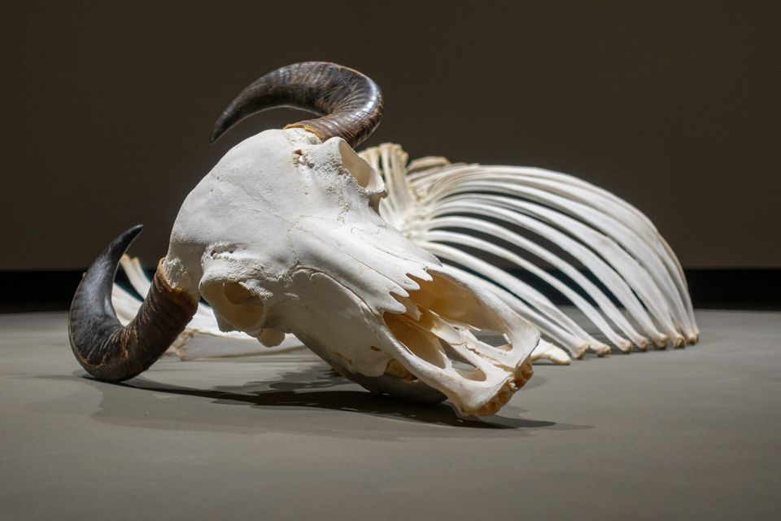
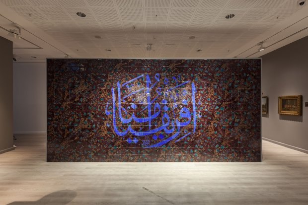
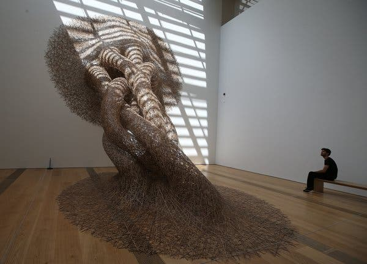
 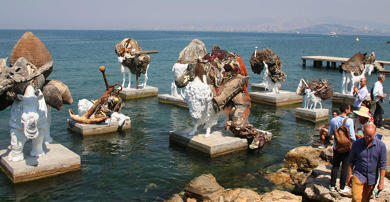
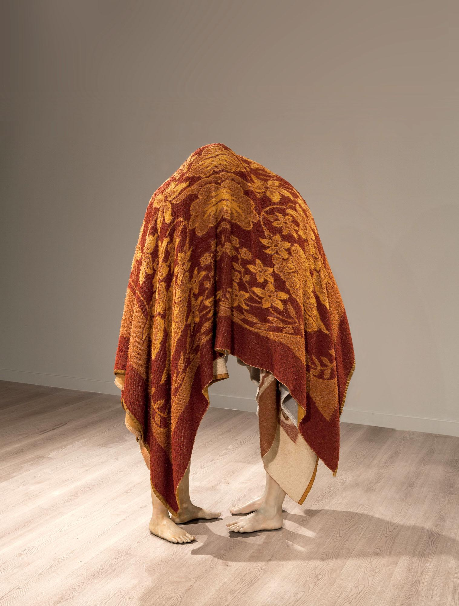
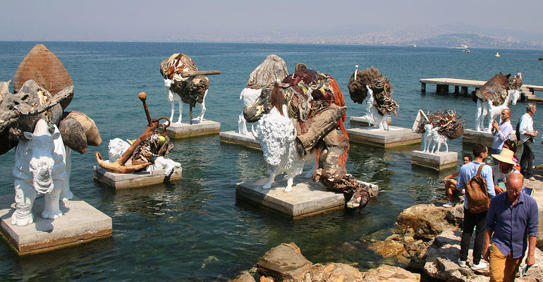
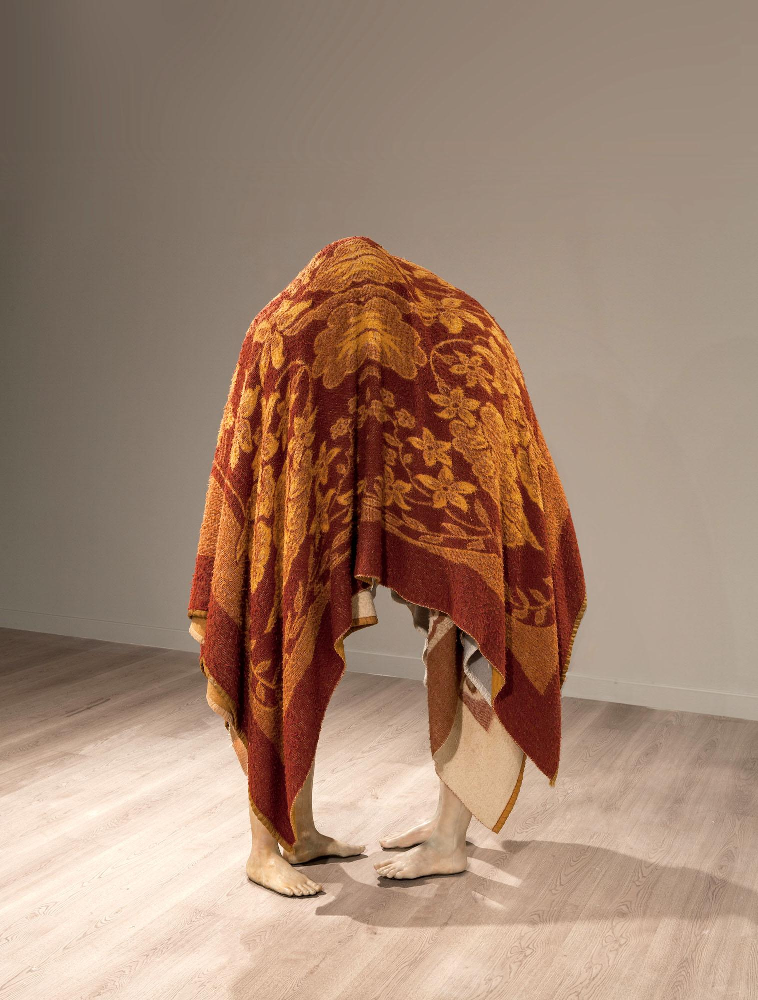
Bienala Internațională de Artă de la Veneția
Bienala Internațională de Artă de la Veneția sau Bienala de la Veneția, (italiană Biennale di Venezia) este un festival de arte ce se desfășoară anual sau bienal la Veneția, nu numai în edificiul de epocă "Palazzo del Cinema" ci și în alte locuri din „orașul lagună”. Este una dintre cele mai importante și prestigioase manifestări de artă contemporană din lume.
A luat naștere din inițiativa unui grup de intelectuali venețieni conduși de primarul din acel timp, Riccardo Selvatico care într-o rezoluție administrativă din aprilie 1893, propunea "instituirea unei expoziții artistice bienale naționale".
Denumirea de "Bienală" derivă de la cadența din doi în doi ani a manifestărilor (cu excepția Festivalului de Film înființat în 1932, acesta având cadență anuală).
Atât Bienala internațională de artă cât și Festivalul de film din Veneția sunt primele și totodată cele mai vechi manifestații de acest fel, care dăinuie și azi.
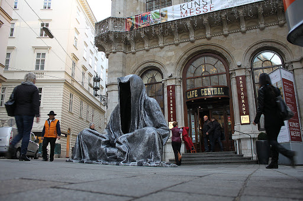
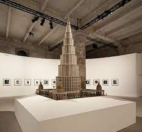
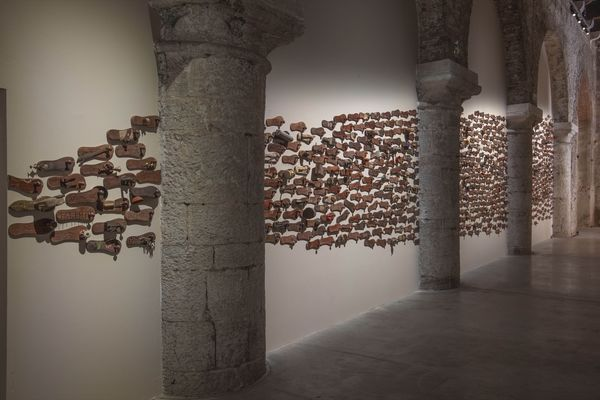
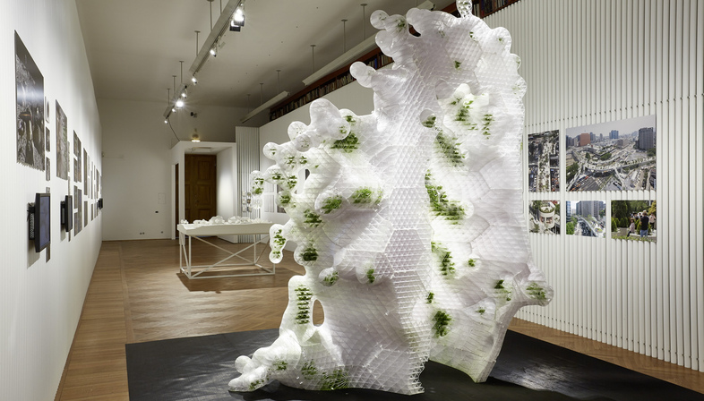
 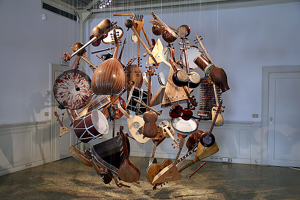
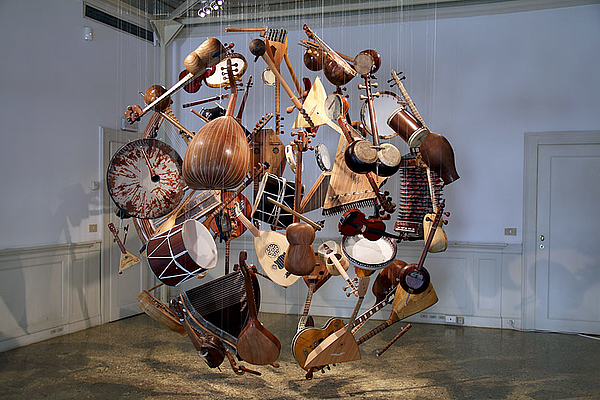
Manifesta
Manifesta a luat naștere la începutul anilor ’90 ca răspuns la schimbările politice, economice și sociale de după sfârșitul Războiului Rece și pașii ulteriori către integrarea europeană. De atunci, Manifesta s-a dezvoltat într-o platformă itinerantă axată pe dialogul dintre artă și societate din Europa.
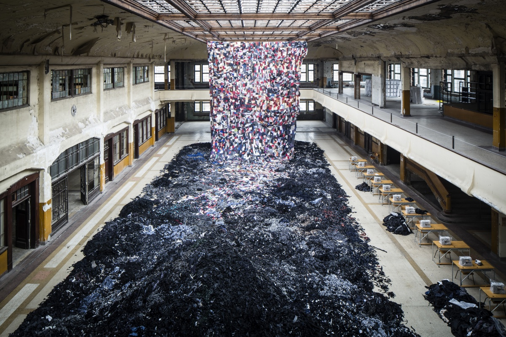
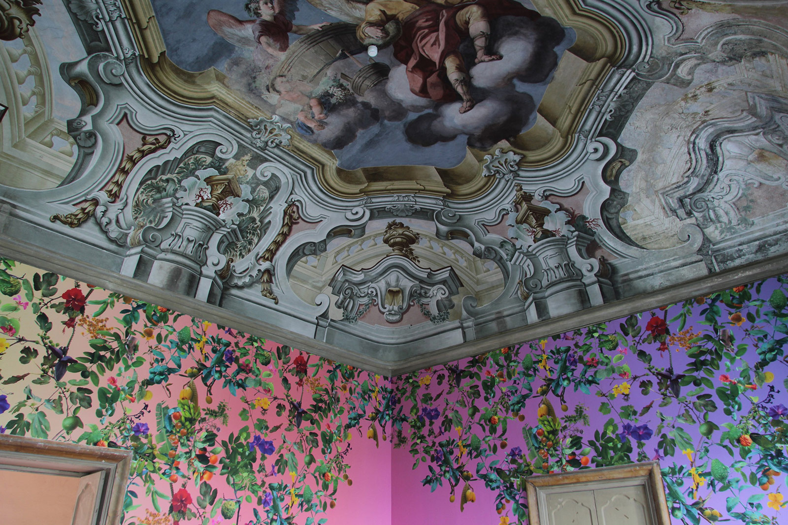
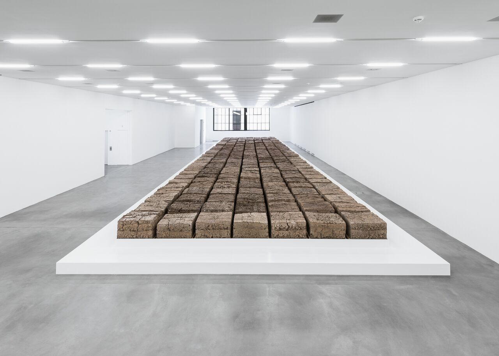
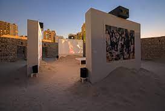
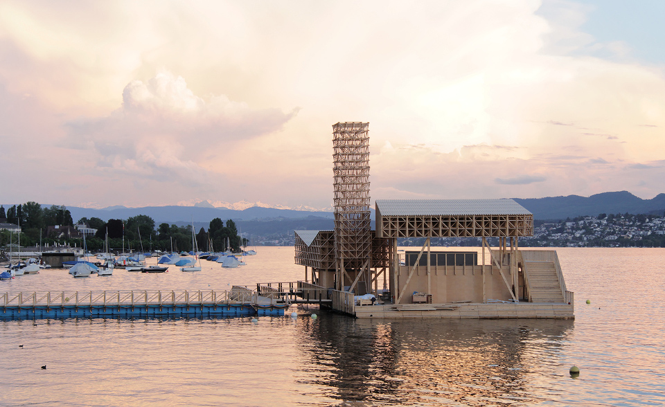
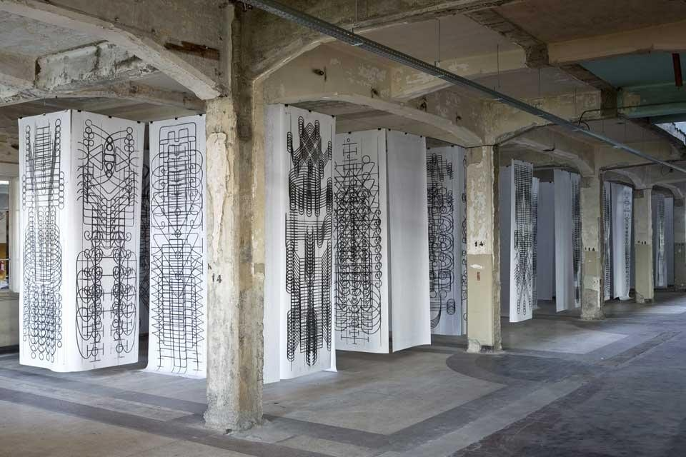
documenta
documenta este o expoziție de artă contemporană, supranumită 'The Hundred Day Museum' (Museul de 100 de zile); are loc din cinci în cinci ani la Kassel în Germania, oraș care timp de trei luni devine centrul lumii artistice mondiale.
A fost fondată de artistul, profesor și curator Arnold Bode începând cu 1955, ca o mărturie a dorinței Germaniei de a se împăca cu restul lumii moderne și de a se confrunta cu propriul faliment cultural cauzat de cel de-al Doilea Război Mondial.
Denumirea expoziției este un cuvânt artificial, inventat. Termenul își propunea să indice intenția fiecărei expoziții, și în special a primei ediții documenta din 1955, de a reprezenta o documentare a artei moderne, aspect ce nu a fost accesibil publicului în Germania nazistă. Pentru fiecare ediție a documentei se desemnează un director artistic diferit, motiv pentru care de fiecare dată documenta este „reinventată”, oferind noi puncte de vedere.
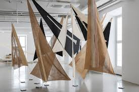
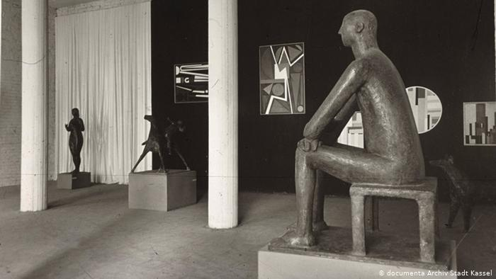
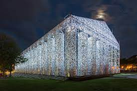
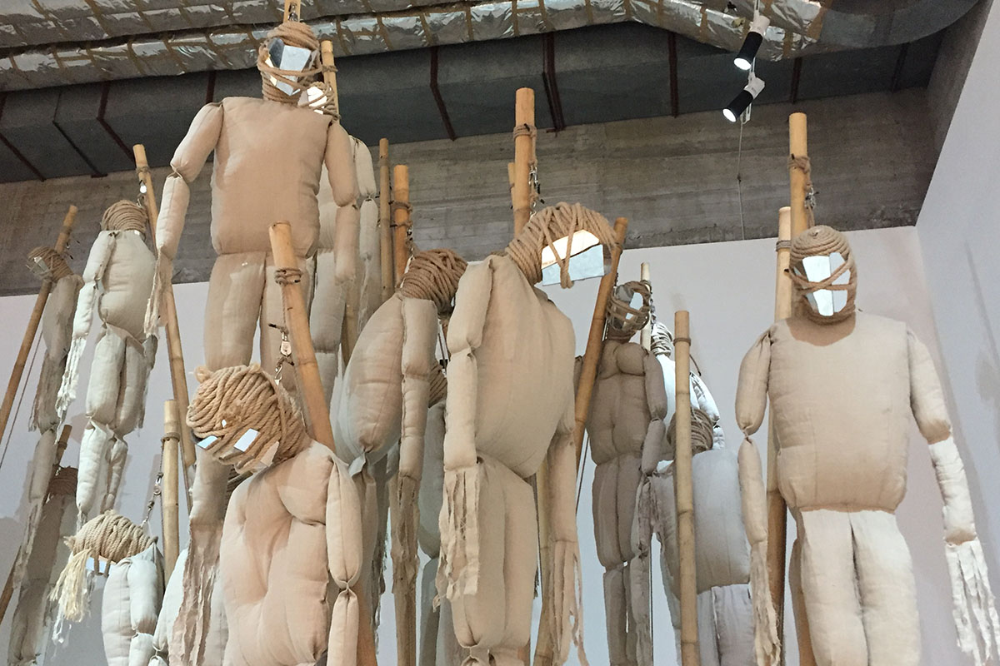
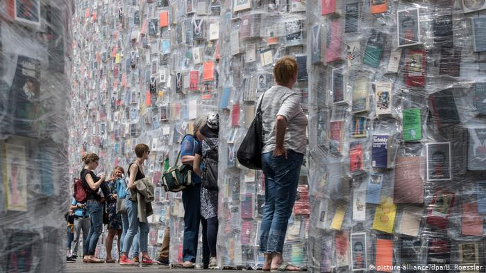
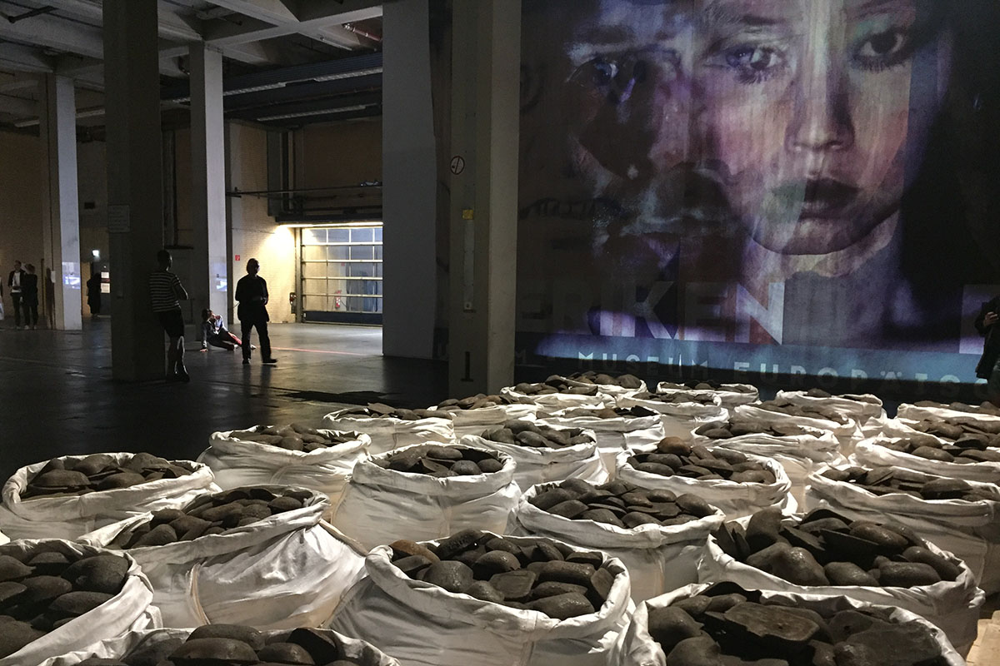